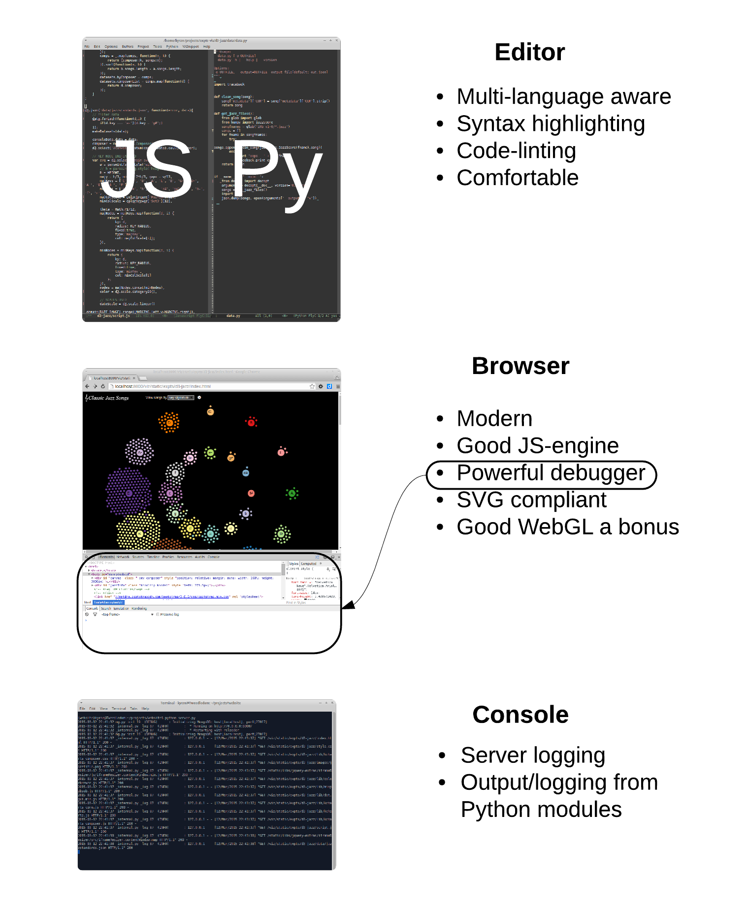

Crafting a Dataviz Toolchain with Python and JavaScript
Dataviz Brighton
Created by Kyran Dale / @kyran_dale

This book aims to get you up to speed with what is, in my opinion, the most powerful data-visualisation stack going: Python and JavaScript. You'll learn enough of big libraries like Pandas and D3 to start crafting your own web data-visualisations and refining your own toolchain. Expertise will come with practice but this book presents a shallow learning curve to basic competence.
The Dataviz Toolchain

Low Entry Threshold for Beginner Dataviz Programmers
Python and JavaScript are arguably vying for #1 and #2 best choice first programming language. They are relatively simple, scripting languages with little of the overhead found in more `Enterprisey' languages like Java and C++.
But unlike most introductory languages they're both a good start and end point for ambitious data-visualizers.
Why Dataviz Must Go To the Web
Why Dataviz Must Go To the Web
The humble URL as a token of exchange.
- Cloud servers in a few clicks (AWS, Heroku, DigitalOcean etc.)
- JFiddle, JSBin et. al. - demo live JavaScript visualisations.
- http://blockbuilder.org/ - Github gists to D3 visualisations (11,000 examples!).
- Rich ecosystem, skills freely traded, standards rising inexorably.
- Barriers to entry dropping all the time...
Nobody Likes Me, Everybody Hates Me...
Coming to terms with JavaScript
JavaScript's Development
- JS a 'toy' language.
- Ugly, kludgy syntax
- Slow interpreter
- Generally small code-bases
- Difficult to scale
ECMAScript 2016
Better all the time
- Modules!!, e.g. `import defaultMember from "module-name";'
- Default parameters!, e.g. `def foo(bar, baz=10){...'
- No more for loops, e.g. `[1, 2, 3].forEach(d => console.log(d));'
Shifting Bits
JS smokes Python for speed

JavaScript's Development
If JavaScript is good and getting better why bother with Python?
JavaScript's Development
Nothing to remotely compare in JS ecosystem with Python's data-processing stack. NumPy, SciPy, Pandas, scikit-learn etc. are all in different league to anything JS has to offer. Data-processing with JS is currently a pain.
Dataviz Toolchain
Getting in the Game
Simplify your life
- Avoid frameworks like Angular, React (Flux), Meteor etc..
- Innoculate against JS Toolitus - Grunt, Gulp, Yeoman, Bower etc..
- Learn the basic HTML elements, <div> content blocks, <select> selectors etc..
- Invest some time learning Scalable Vector Graphics (SVG) elements.
- Don't worry about LESS or SASS for now - vanilla CSS is fine.
- In fact, vanilla everything is a pretty good place to start.
Your Webdev Tools
Decent editor, browser developer tools (Chrome by a mile), console
Conclusion
- This is a very exciting time for Dataviz as powerful and relatively approachable tools become available and the web allows free (as in beer) sharing.
- Python and JavaScript are the perfect complement for a powerful dataviz stack.
- JavaScript is non-negotiable, being the only first class browser language but fortunately has some extremely mature, powerful dataviz libraries, D3 being pre-eminent.
- The Python Data-processing ecosystem is growing at an incredible pace, offering the power of parallelised, optimised, low-level libraries for data mining, machine learning, cluster analysis etc. with the ease of a succinct, readable and highly efficient high level scripting language.